As an example of using SLALIB to transform mean places, here is
a program which implements the top-left path of Figure 1.
An FK4  of arbitrary equinox and epoch and with
known proper motion and
parallax is transformed into an FK5 J2000
of arbitrary equinox and epoch and with
known proper motion and
parallax is transformed into an FK5 J2000  for the current
epoch. As a test star we will use
for the current
epoch. As a test star we will use  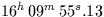,
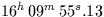, 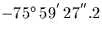, equinox 1900, epoch 1963.087,
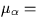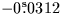/y, 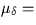 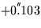 /y,
parallax =
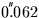 , radial velocity = -34.22 km/s. The
epoch of observation is 1994.35.
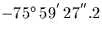, equinox 1900, epoch 1963.087,
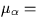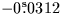/y, 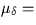 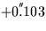 /y,
parallax =
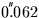 , radial velocity = -34.22 km/s. The
epoch of observation is 1994.35.
IMPLICIT NONE
DOUBLE PRECISION AS2R,S2R
PARAMETER (AS2R=4.8481368110953599D-6,S2R=7.2722052166430399D-5)
INTEGER J,I
DOUBLE PRECISION R0,D0,EQ0,EP0,PR,PD,PX,RV,EP1,R1,D1,R2,D2,R3,D3,
: R4,D4,R5,D5,R6,D6,EP1D,EP1B,W(3),EB(3),PXR,V(3)
DOUBLE PRECISION sla_EPB,sla_EPJ2D
* RA, Dec etc of example star
CALL sla_DTF2R(16,09,55.13D0,R0,J)
CALL sla_DAF2R(75,59,27.2D0,D0,J)
D0=-D0
EQ0=1900D0
EP0=1963.087D0
PR=-0.0312D0*S2R
PD=+0.103D0*AS2R
PX=0.062D0
RV=-34.22D0
EP1=1994.35D0
* Epoch of observation as MJD and Besselian epoch
EP1D=sla_EPJ2D(EP1)
EP1B=sla_EPB(EP1D)
* Space motion to the current epoch
CALL sla_PM(R0,D0,PR,PD,PX,RV,EP0,EP1B,R1,D1)
* Remove E-terms of aberration for the original equinox
CALL sla_SUBET(R1,D1,EQ0,R2,D2)
* Precess to B1950
R3=R2
D3=D2
CALL sla_PRECES('FK4',EQ0,1950D0,R3,D3)
* Add E-terms for the standard equinox B1950
CALL sla_ADDET(R3,D3,1950D0,R4,D4)
* Transform to J2000, no proper motion
CALL sla_FK45Z(R4,D4,EP1B,R5,D5)
* Parallax
CALL sla_EVP(sla_EPJ2D(EP1),2000D0,W,EB,W,W)
PXR=PX*AS2R
CALL sla_DCS2C(R5,D5,V)
DO I=1,3
V(I)=V(I)-PXR*EB(I)
END DO
CALL sla_DCC2S(V,R6,D6)
:
It is interesting to look at how the  changes during the
course of the calculation:
changes during the
course of the calculation:
16 09 55.130 -75 59 27.20 original equinox and epoch 16 09 54.155 -75 59 23.98 with space motion 16 09 54.229 -75 59 24.18 with old E-terms removed 16 16 28.213 -76 06 54.57 precessed to 1950.0 16 16 28.138 -76 06 54.37 with new E-terms 16 23 07.901 -76 13 58.87 J2000, current epoch 16 23 07.907 -76 13 58.92 including parallax
Other remarks about the above (unusually complicated) example:
SLALIB --- Positional Astronomy Library